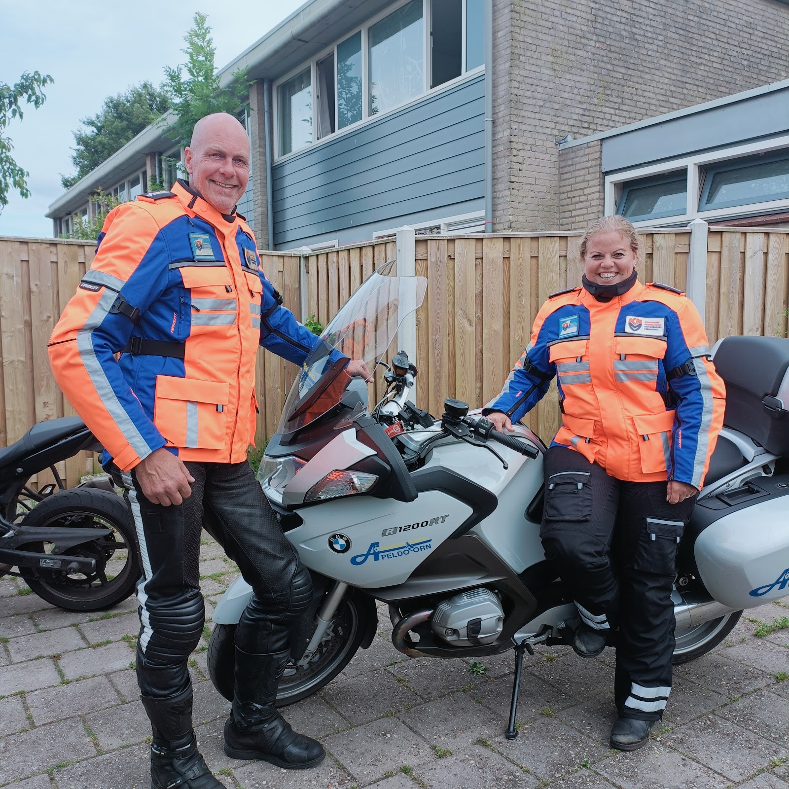
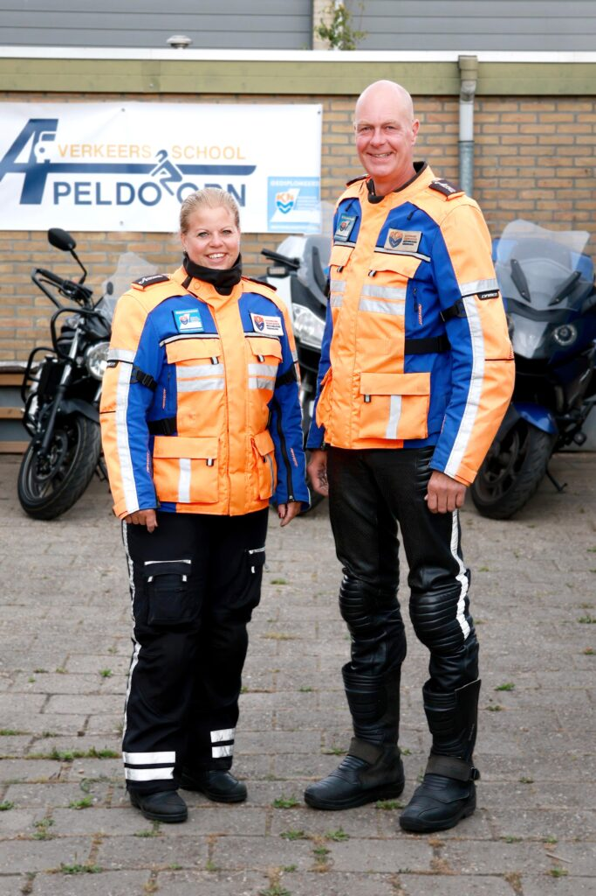
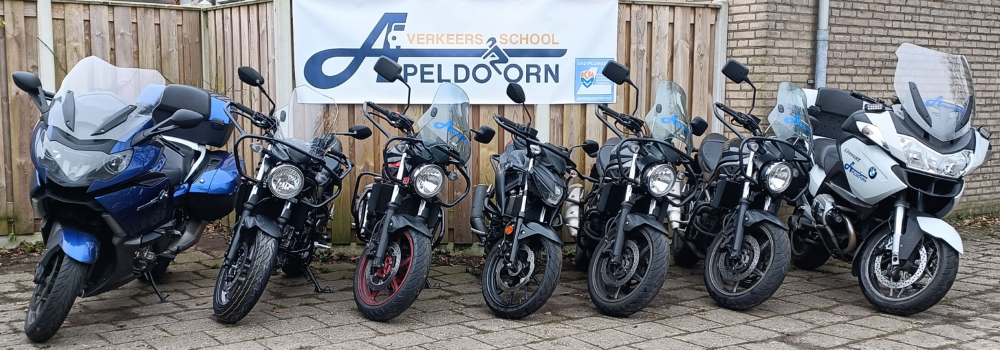
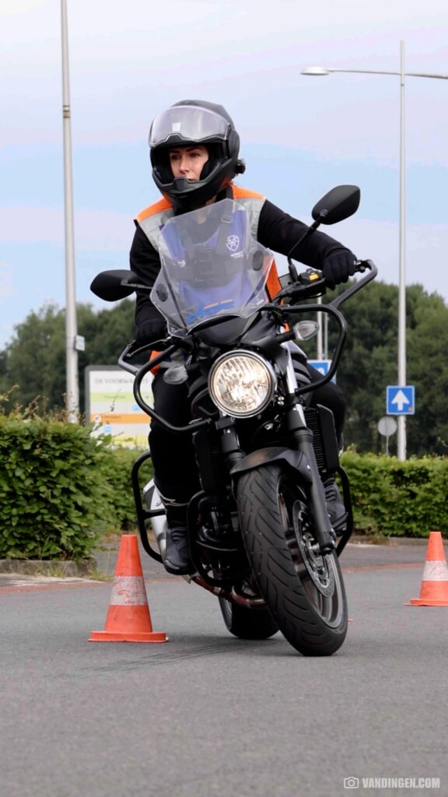
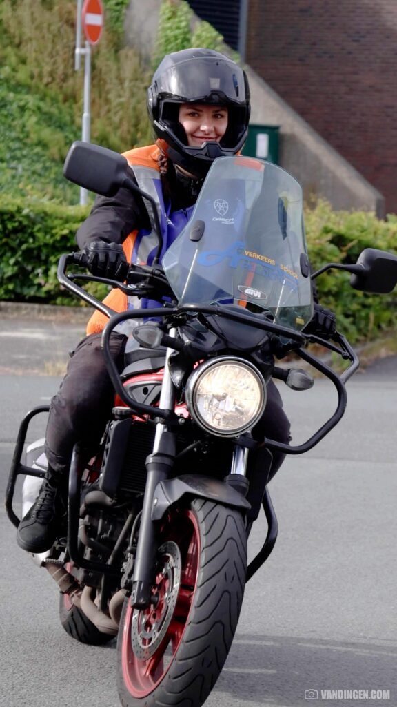
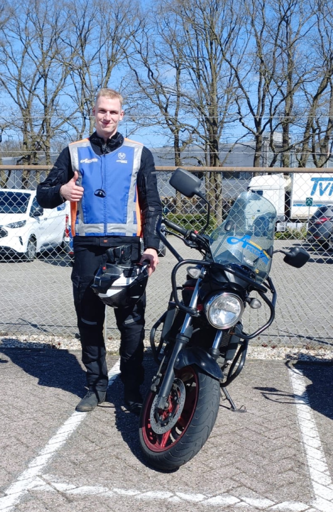
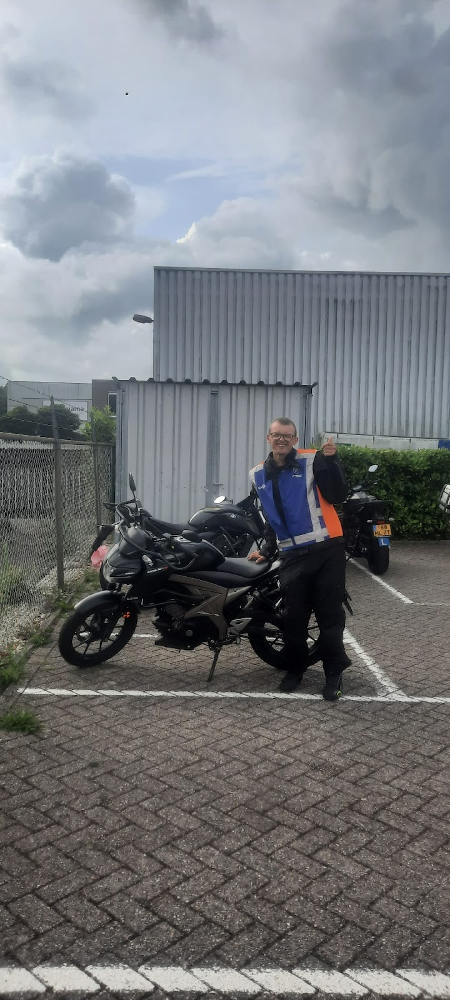
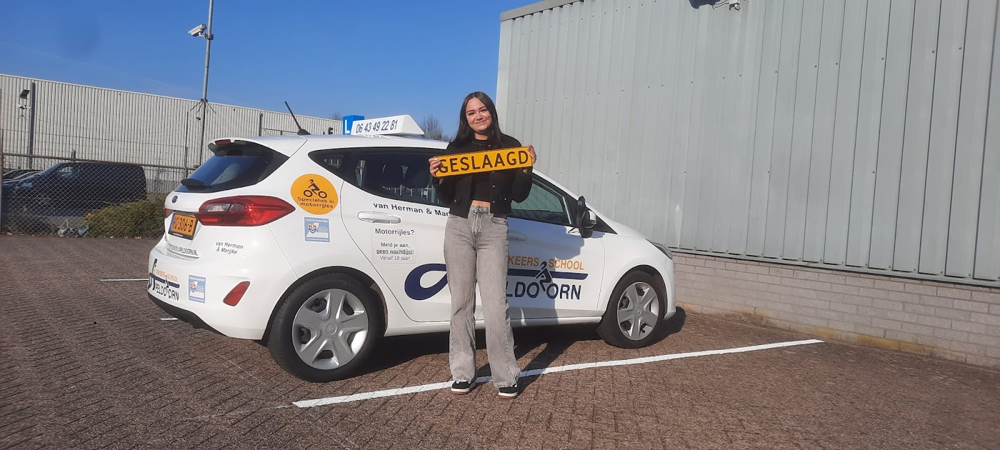
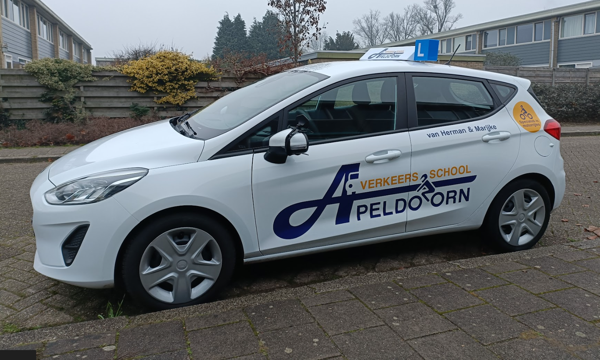

Motorrijles bij Herman en Marijke.
Twee gepassioneerde motorrijders die tijdens elke les zelf meerijden op de motor. Ook voor je autorijbewijs.
5,0 op Google, uit 80 reviews


Van hobby naar beroep
Wij zijn gepassioneerde en zeer ervaren motorrijders. Wat begon als hobby, is ons beroep geworden. We helpen je niet alleen aan je rijbewijs, we zorgen er ook voor dat je vol vertrouwen de weg op gaat.
Tijdens de lessen rijden we altijd zelf mee op de motor. Zo kunnen we je niet alleen begeleiden, maar ook laten zien hoe het moet: wegpositie, bochtentechniek, motorbeheersing en defensief rijden.
KNMV-gecertificeerd. De rijschool is KNMV-gecertificeerd en we zijn allebei KNMV-gediplomeerd instructeur en gecertificeerd gevorderd motortrainer.

Je motorrijbewijs in drie stappen
Theorie en praktijk, stap voor stap. Je gaat pas door naar de volgende oefening als je er klaar voor bent.
-
1
Theorie-examen
Je leert de verkeersregels en veiligheidsvoorschriften. Dit is de basis voor je veiligheid als motorrijder.
-
2
AVB Algemene Voertuigbeheersing
Op een afgesloten terrein leer je de motor beheersen. Dit examen bereidt je voor op het rijden in het verkeer.
-
3
AVD Algemene Verkeersdeelname
De laatste stap: veilig en verantwoord door het verkeer. Na dit praktijkexamen ga je vol vertrouwen de weg op.


Welke categorie past bij jou?
Je leeftijd en ervaring bepalen welk motorrijbewijs je kunt halen en welke motor je daarna mag rijden.
A1
Theorie vanaf 17,
praktijk vanaf 18
Lichte motoren tot maximaal 125 cc en 11 kW.
A2
Vanaf 20 jaar
Middelzware motoren tot 35 kW.
A code 80
Vanaf 21 jaar
Middelzware motoren tot 35 kW. Ben je 24, of heb je je rijbewijs 2 jaar, dan vervalt code 80 en mag je motoren zonder vermogenslimiet rijden.
A
Vanaf 21 onder voorwaarden, onbeperkt vanaf 24
Zwaardere motoren zonder vermogenslimiet.
Wat leerlingen zeggen
5,0 uit 80 Google-reviews
“Bij Herman en Marijke draait het om kwaliteit en niet om kwantiteit en dat merk je aan alles! Ik heb voornamelijk gelest bij Herman en een enkele keer bij Marijke. Veel van de lessen die ik heb gehad, vooral bij de AVD, waren "privélessen". …”
“Gelest bij Marijke en Herman, super lieve en leuke mensen. Geven heel fijn en duidelijk les. Geven veel vertrouwen in het leren motorrijden. Echt een aanrader als je op zoek bent naar een rijschool! Herman en Marijke…. Bedankt voor alles!!!”
“Afgelopen zomer mijn motorrijbewijs gehaald bij Marijke en Herman! Dankzij de ontzettend goede begeleiding tijdens de lessen heb ik zowel mijn AVB en AVD in één keer gehaald. Bij Marijke en Herman ben je ook absoluut geen nummer en is er voor en na de les altijd even tijd voor een bakje koffie en een goede evaluatie. …”
“Zeer goede ervaring gehad met Verkeersschool Apeldoorn! Herman en Marijke nemen echt de tijd voor je en begeleiden je heel goed tijdens de lessen. Zowel het AVB- als het AVD-deel verliepen erg fijn. Ik voelde me op geen enkel moment onzeker of niet klaar voor een volgende oefening. …”
“Super goede (motor)rijschool! Na A1 hier 2 jaar geleden gehaald te hebben ben ik (vanuit Zutphen zelfs) terug gekomen voor A2. Instructeurs (KNMV gecertificeerd) brengen de stof goed over met veel aandacht, zijn altijd vriendelijk en fijn in het maken van afspraken. Je bent hier niet ‘uitgeleerd’. …”
Geslaagd
Leerlingen van Herman en Marijke, op foto's die ze zelf op Google deelden.




Ook je autorijbewijs
Je rijbewijs B is een stap naar vrijheid en zelfstandigheid. Bij ons volg je een zorgvuldig opgebouwd traject, met lessen op jouw tempo.
1Theorie-examen
Met gerichte theoriebegeleiding leer je de regels en ontwikkel je verkeersinzicht.
2Praktijklessen
Op maat: schakelen en parkeren, maar ook defensief rijden en inzicht in verkeerssituaties.
3Praktijkexamen
Beheers je het rijden goed genoeg, dan bereiden we je samen voor op het examen.
Zin om te beginnen?
Vragen over de opleiding, of meteen aanmelden? Bel, app of mail ons. Tijdens een rijles nemen we niet altijd direct op. Stuur dan gerust een bericht, we bellen je zo snel mogelijk terug.
- Adres
- Oberonstraat 24
7323 ED Apeldoorn - Je bent welkom via de achteringang van dit adres.